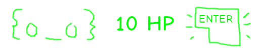

install.packages("keypress")
key <- keypress::keypress() # up arrow pressed
key
tl;dr
The {keypress} R package by Gábor Csárdi records input from a simple keyboard-button press. You can use this to control games, like the ones in the tiny {hokey} package.
Whaddup gameRs?
I’ve made some silly games in R using the {R6} package for encapsulated OOP. For example:
- {ActionSquirrel} a 2D action-adventure game (blog, source)
- {safar6} a text-based recreation of Pokémon’s Safari Zone (blog, source)
- an ‘Automatic Bell Dispenser’ to mimics the cash machine used in Animal Crossing: New Horizons (blog)
In {ActionSquirrel} you move a character around a 2D grid. Problem (kinda): to go up you type x$move("up"), which means ‘apply the move method to the previously-initialised R6 object called x, and supply to the where argument the direction "up"’. A bit long-winded, eh?
It would be more natural to provide a single keyboard input to a game scenario, so a left-arrow press moves the player to the left, right? Right.1
Record inputs
Sure, R’s readline() can take user input, but you would literally have to type l, e, f, t and Enter, because the function doesn’t recognise key presses directly.
This is where Gábor Csárdi’s {keypress} package comes in. It accepts a single button press from the keyboard, including the arrow keys. It’s available on CRAN:
"up"{keypress} works in the terminal but doesn’t work everywhere, such as RStudio. Use keypress::has_keypress_support() to see if it’s supported by the console you’re using. See the package README for details of the platforms supported and the keys that are accepted as input.
Minigames
I thought I’d try out with {keypress} with three tiny interactive games, which I’ve bundled into a pico package2 called {hokey}.
remotes::install_github("matt-dray/hokey")Each one takes a keypress input from keypress::keypress() to affect the game, which is just a bunch of if or while statements, basically. You can see the functions in the {hokey} package itself, if you’re a nerd.3
The games in order of complexity:
type(), a test of typing skillsadventure(), a 2D side-scrollling adventurebattle(), a clicker-style monster smasher
These aren’t properly documented ot tested or anything. They’re just for demo’s sake.
The rest of this post describes the games with a dash of dry humour.
1. Typing test
How fast you can you type randomly-selected letters?
In the type() game a countdown will begin and then you’ll be prompted to type one letter at a time, the total number of which can be controlled with the n argument.
Here’s what a completed game might look like, where each letter is revealed sequentially after typing the previous one.
hokey::type(n = 5)3... 2... 1... Go!
Press 'r'! Hit!
Press 'o'! Hit!
Press 'f'! Hit!
Press 'l'! 'h'? Miss!
Press 'z'! Hit!
End! 4/5 in 5.403 seconds.Yes, three decimal places in the elapsed time so that people can be more easily ranked on speedruns.com.
2. An adventure
You’ve played 2D games (e.g. Mario). You’ve played 2.5D games (e.g. Mario). You’ve played 3D games (e.g. Mario).
You’re thinking the future is four-dimensional Mario. But you’re wrong.
Instead, hokey::adventure() explores the full power of moving along a one-dimensional line.
Take control of the hero. Which is a dot. Move around the overworld. Which is a line. Simulate the lustrous points of Lineland from Edwin A Abbott’s Flatland!
hokey::adventure(len = 10)Press left/right arrow keys
--.------- Below is a demo of what happens if you start the game and travel to the dangerous lands of the west (two left-key presses, resulting in you being bumped back on course), before heading for the utopian kingdom in the east (multiple right-key presses).
The symbol to the right of the line explains what’s happened (< is left, > is right, x is an illegal move, ! is a win).
Press left/right arrow keys
--.-------
-.-------- <
.--------- x
-.-------- >
--.------- >
---.------ >
----.----- >
-----.---- >
------.--- >
-------.-- >
--------.- >
---------. ! Such graphics! Such dimensions!
3. A clicker
Ever heard of Cookie Clicker? It’s a game where you click. A cookie. A whole bunch of times. Like, seriously, a whole bunch of times. Why? To win, of course.
Here instead is a ‘presser’, where where you tap keys to vanquish randomised foes. Are there upgrades? No. Are there cool sprites? Not really. But do you click a lot? Also no, but you get to press buttons a lot.
So, initiate a battle with hokey::battle() and you’re faced with monstrous foes, who have terrifying randomised faces made of letters and symbols.
hokey::battle(n = 3)NEW FOE! { O _ O } 10 HP Smash a key (I recommend Enter because of its large surface area) to deplete the foe’s hit points (HP) until they’re defeated. Each hit is printed as a period.
NEW FOE! { O _ O } 10 HP
..........
VICTORY! { x _ x } 0 HPIncrementally more powerful foes will appear!
NEW FOE! | - o - | 20 HP
....................
VICTORY! | x o x | 0 HP
NEW FOE! [ ' v ' ] 30 HP
..............................
VICTORY! [ x v x ] 0 HPYou know they’re beaten because their eyes become crosses.
Game over
Challenging. A test of wits. Worth your time.
All are phrases that do not sum up the games of {hokey}.
But, for me at least, I’ve got a better understanding of how {keypress} could be used for games written in R, a burgeoning field in the world of R programming.4
Let me know how much you enjoyed these games and how much it’s going to suck to go back to your cutting-edge Neo Geo or Master System or whatever the kids are playing these days.
Environment
Session info
Last rendered: 2023-07-02 22:43:15 BSTR version 4.3.1 (2023-06-16)
Platform: aarch64-apple-darwin20 (64-bit)
Running under: macOS Ventura 13.2.1
Matrix products: default
BLAS: /Library/Frameworks/R.framework/Versions/4.3-arm64/Resources/lib/libRblas.0.dylib
LAPACK: /Library/Frameworks/R.framework/Versions/4.3-arm64/Resources/lib/libRlapack.dylib; LAPACK version 3.11.0
locale:
[1] en_US.UTF-8/en_US.UTF-8/en_US.UTF-8/C/en_US.UTF-8/en_US.UTF-8
time zone: Europe/London
tzcode source: internal
attached base packages:
[1] stats graphics grDevices utils datasets methods base
other attached packages:
[1] keypress_1.3.0
loaded via a namespace (and not attached):
[1] htmlwidgets_1.6.2 compiler_4.3.1 fastmap_1.1.1 cli_3.6.1
[5] tools_4.3.1 htmltools_0.5.5 rstudioapi_0.14 yaml_2.3.7
[9] rmarkdown_2.22 knitr_1.43.1 jsonlite_1.8.7 xfun_0.39
[13] digest_0.6.31 rlang_1.1.1 evaluate_0.21 Reuse
CC BY-NC-SA 4.0